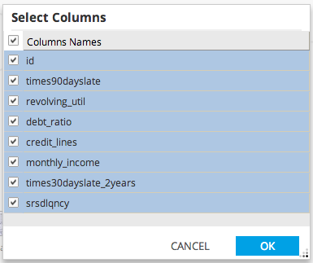
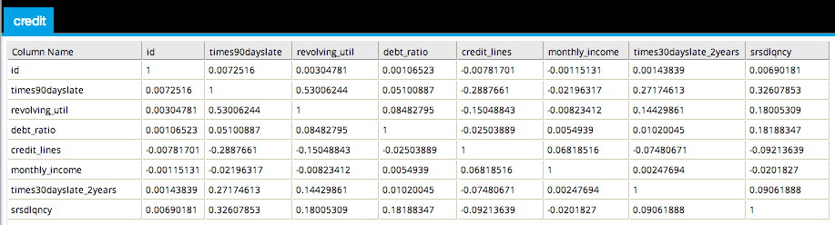

Correlation Analysis
Correlation Analysis allows users to specify two or more numeric type attributes (columns) in the dataset for analysis. The operator will calculate the correlation between each pair of selected columns.
Use Correlation Analysis to view a correlation matrix of the specified columns.
- Database operators must output a table/view for Correlation Analysis to be enabled.
- Correlation Analysis is accessible from the Explore menu of the operator toolbar or by right-clicking an appropriate operator.

